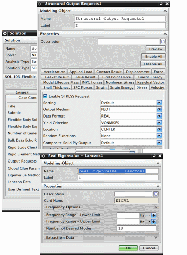

在 SOL 103 柔性体解算方案的解算方案对话框中，您必须指定求解的模态数以及要恢复的结果类型，默认情况下，选择的是应力和位移结果。

求解将产生多个结果文件，千万不要删除、移动或者重命名：
.dat — Nastran 输入文件，在以后的结果恢复中需要用到。
.op2 — 包含模型几何体和从模态分析中得到的组件模态结果。
.rfi — RecurDyn Rflex 输入文件，在 RecurDyn 求解中表示柔性体时需要使用。
记住.rfi 文件的位置，因为您在运动仿真中创建柔性连杆时需要指明它。